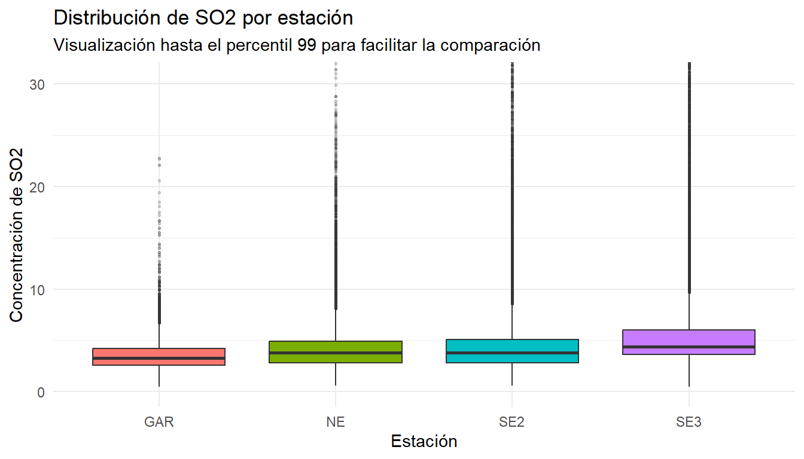
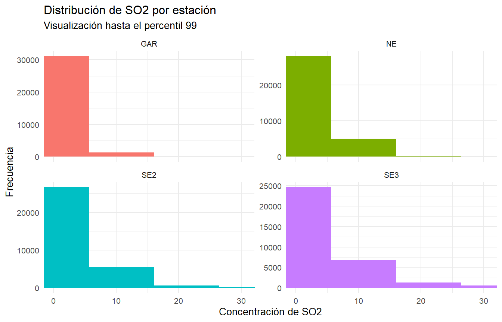
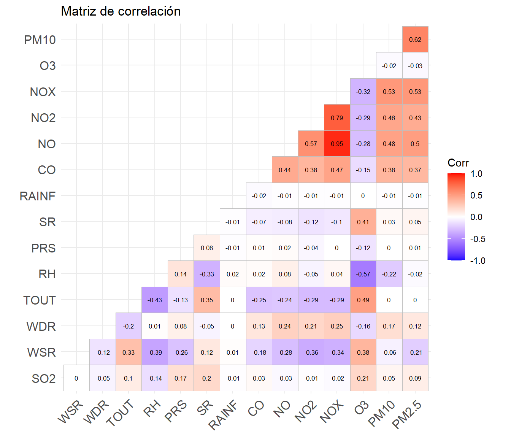
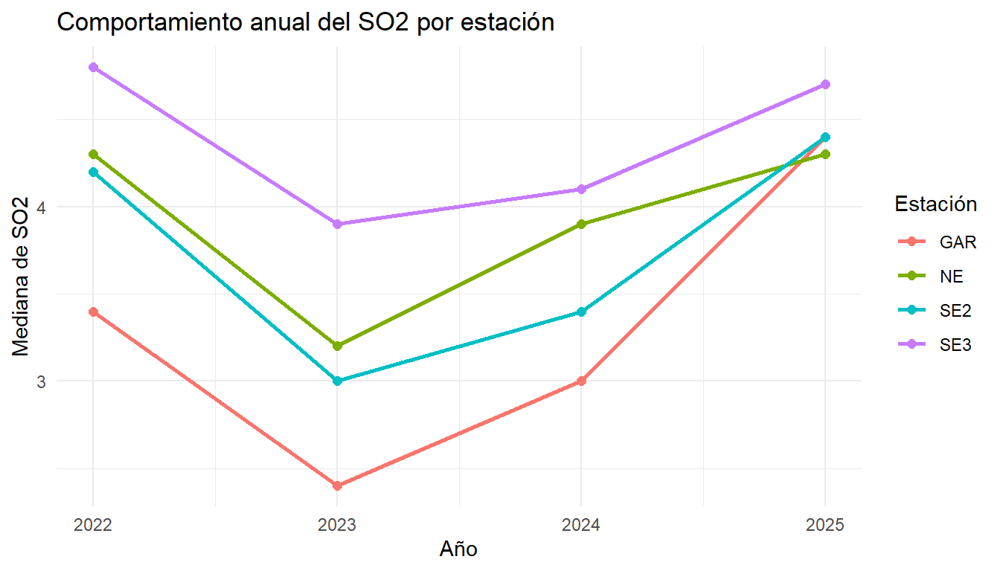
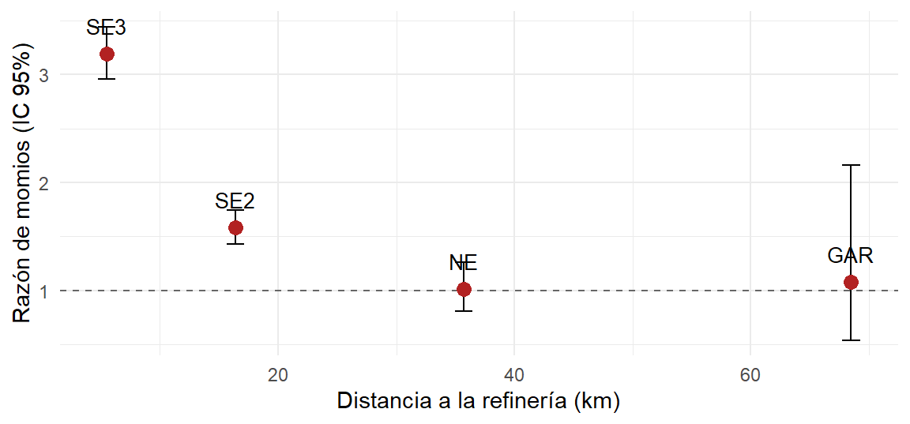
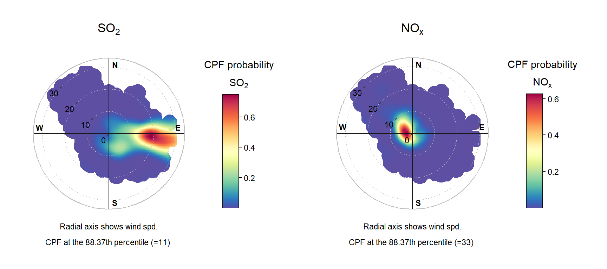
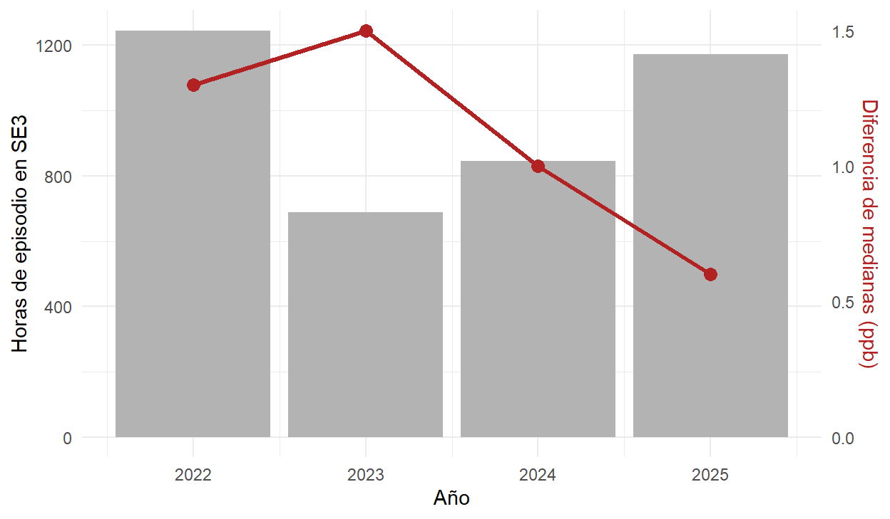

EntregaFinal
Resumen
Introducción
La calidad del aire es un aspecto fundamental para el bienestar de la población y el medio ambiente, ya que depende de la presencia y concentración de diferentes contaminantes en la atmósfera. Cuando estos alcanzan niveles elevados pueden generar efectos negativos sobre la salud y los ecosistemas. Por ello, su monitoreo pemrite identificar condiciones de riesgo y generar información útil para reducir la exposición de la población y apoyar la toma de decisiones públicas (HOLCIM, s.f.).
Importancia del análisis de la calidad del aire
El análisis de la calidad del aire es importante para la ciudadanía debido a sus efectos sobre la salud. La Organización Mundial de la Salud estima que la contaminación del aire exterior ocasionó aproximadamente 4.2 millones de muertes prematuras en 2019 y la relaciona con enfermedades cardiovasculares, respiratorias, accidentes cerebrovasculares y cáncer de pulmón (OMS, 2024). Además, contar con información actualizada permite emitir recomendaciones durante episodios de contaminación, industria y desarrollo urbano.
Entre los contaminantes de mayor importancia se encuentran las partículas suspendidas (\(PM_{10}\)$PM_{10}$ y \(PM_{2.5}\)), el ozono (\(O_3\)), el dióxido de nitrógeno (\(NO_{2}\)), el dióxido de azufre (\(SO_{2}\)) y el monóxido de carbono (\(CO\)). El material particulado es especialmente relevante debido a que las partículas más pequeñas pueden penetrar profundamente en los pulmones e incluso ingresar al torrente sanguíneo, generando efectos cardiovasculares y respiratorios (OMS, 2024). La OMS establece valores guía internacionales para estos contaminantes; mientras que en México el Índice Aire y Salud comunica las condiciones mediante las categorías buena, aceptable, mala, muy mala y extremadamente mala.
Medición de la calidad del aire y variables relacionadas
La calidad del aire se evalúa mediante redes de monitoreo que registran las concentraciones de contaminantes atmosféricos. Estas mediciones pemriten analizar su comportamiento temporal y espacial, además de detectar episodios que puedan representar un riesgo para la población (PNUMA, 2022). En México, el Sistema Nacional de Información de la Calidad del Aire (SINAICA), administrado por el INEEC, integra y valida información proveniente de distintos sistemas de monitoreo del país (INECC, s.f.).
Para interpretar los resultados es necesario considerar tanto la unidad de concentración como el periodo de exposición. Las partículas suelen expresarse en microgramos por metro cúbico, mientras que algunos gases se reportan en partes por millón o partes por billón. También pueden analizarse concentraciones horarias, promedios de 8 horas, 24 horas o anuales. Además de las emisiones, variables meteorológicas como temperatura, humedad, velocidad y dirección del viento, presión, precipitación y radiación solar influyen en la dispersión, transporte y acumulación de los contaminantes.
Normas y lineamientos para la protección de la salud
A nivel internacional, las Directrices Mundiales sobre la Calidad del Aire de la OMS establecen valores recomendados para \(PM_{2.5}\) , \(PM_{10}\), \(O_3\), \(NO_2\), \(SO_2\) y \(CO\). Los vaEstas directrices se basan en evidencia científica sobre sus efectos en la salud, pero no son legalmente obligatorias; funcionan como referencia para que cada país desarrolle sus propias regulaciones (OMS,2021).
En México, los límites para la protección de la salud se establecen mediante Normas Oficiales Mexicanas. Para los principales contaminantes se encuentran la NOM-020-SSA1-2021, correspondiente al ozono; la NOM-021-SSA1-2021 para el monóxido de carbono; la NOM-022-SSA1-2019 para el dióxido de azufre; la NOM-023-SSA1-2021 para el dióxido de nitrogeno y la NOM-025-SSA1-2021 correspondiente a las partículas suspendidas (DOF, 2019; DOF,2021). Asimismo, la NOM-172-SEMARNAT establece los lineamientos para comunicar el Índice de Calidad del Aire y Riesgos a la Salud (SEMARNAT, 2023). Una porblemática importante es que los límites establecidos en las normas nacionales no siempre coinciden con las recomendaciones de la OMS, por lo que cumplir con una norma nacional no implica necesariamente la ausencia total de riesgo para la salud.
Dificultades en la medición de la calidad del aire
El monitoreo de la calidad del aire presenta dificultades relacionadas con la cobertura de las estaciones, la disponibilidad y calidad de los registros y la variabilidad espacial y temporal de los contaminantes. Los equipos requieren mantenimiento y calibración, pueden presentarse datos faltantes y una estación representa principalmente las condiciones de su entorno inmediato. Por ello, antes de realizar análsiis estadísticos es necesario validar, depurar y evaluar la disponibilidad de los datos (INECC, s.f. ; PNUMA, 2022).
Sistema Integral de Monitoreo Ambiental de Nuevo León
En Nuevo León, el Sistema Integral de Monitoreo Ambiental (SIMA), administrado por la Secretaría de Medio Ambiente del Estado, monitorea contaminantes atmosféricos y variables meteorológicas en diferentes zonas del Área Metropolitana de Monterrey. Además de informar a la ciudadanía mediante el Índice Aire y Salud, sus registros históricos permiten estudiar el comportamiento y las relaciones entre contaminantes y condiciones ambientales (Gobierno de Nuevo León, s.f.).
La información generada por SIMA constituye la principal fuente de datos para este proyecto y permitirá analizar una problemática específica relacionada con el comportamiento del \(SO_2\) y su posible relación con condiciones meteorológicas y fuentes industriales de la región.
Objetivo
Analizar y caracterizar las concentraciones de dióxido de azufre (\(SO_2\)) registradas durante 2022-2025 en las estaciones SE3 (Cadereyta), SE2 (Juárez), NE (San Nicolás) y NO2 (García), y su relación con las condiciones meteorológicas, principalmente la dirección y velocidad del viento, con el propósito de identificar patrones espaciales y direccionales consistentes con una posible influencia de fuentes industriales localizadas en la zona de Cadereyta.
Objetivo actualizado
Cuantificar el exceso de exposición aguda a \(SO_{2}\) asociado al sector direccional donde se ubica la refinería de Cadereyta, para evaluar si los indicadores de tendencia central (promedios y medianas anuales) que usan actualmente los instrumentos de gestión representan adecuadamente esa exposición.
Esta formulación conserva el marco del Objetivo 4 y el enfoque en fuentes industriales puntuales, pero desplaza el análisis de una atribución causal hacia la cuantificación del exceso de exposición y su posible incorporación a los mecanismos de seguimiento del PIGECA 2023–2033.
Pregunta guía:
¿Las concentraciones de dióxido de azufre (\(SO_2\)) registradas en la estación SE2, SE3, NO2 y NE durante el periodo 2022-2025 presentan patrones espaciales, direccionales y meteorológicos consistentes con una posible influencia de fuentes industriales localizadas en la zona de Cadereyta, como lo es la refinería?
Objetivos específicos:
Describir el comportamiento temporal de las concentraciones de \(SO_2\) registradas en las estaciones NE, SE2, NO2 y SE3 durante 2022-2025, identificando su distribución, variación temporal y los periosos en los que se presentan concentraciones elevadas en cada sitio.
Analizar la relación entre las concentraciones de \(SO_2\), la dirección y la velocidad del viento con el fin de identificar los sectores direccionales asociados con una mayor frecuencia de episodios de alta concentración.
Comparar los patrones de \(SO_2\) entre las estaciones seleccionadas, utilizando la estación García como referencia, para evaluar si los episodios observados presentan un comportamiento localizado en la zona de Cadereyta o si corresponden a fenómenos más regionales.
Analizar de manera complementaria el comportamiento de otros contaminantes atmosféricos durante los episoidos elevados de \(SO_2\) , con el propósito de caracterizar mejor estos eventos y evitar atribuir automáticamente todos los incrementos observados a una misma fuente industrial.
Antecedentes relacionados con el objetivo del trabajo
Diversos estudios han analizado la relación entre las concentraciones de contaminantes atmosféricos, las condiciones meteorológicas y la ubicación de fuentes de emisión de contaminantes con el propósito de determinar el posible origen de episodios de contaminación. Para el presente proyecto resultan especialmente relevantes los trabajos de Uria-Tellaetxe y Carslaw (2014), Clarke et al. (2014) y Xue et al. (2023) ya que presentan metodologías y aplicaciones relacionadas con la identificación de fuentes mediante información de calidad del aire, dirección y velocidad del viento.
Uria-Tellaetxe y Carslaw (2014) desarrollaron la Función de probabilidad bivariada condicional como una extensión de la función de probabilidad condicional. Esta metodología permite relacionar las concentraciones registradas de un contaminante con la dirección y velocidad del viento, de manera que sea posible identificar los sectores y condiciones meteorológicas asociados con concentraciones elevadas. Los autores describen su propuesta como “un nuevo método de modelación de receptor para identificar y caracterizar fuentes de emisión” (Uria-Tellaetxe & Carslaw, 2014). La principal ventaja de incorporar la velocidad del viento es que proporciona información extra sobre las características de dispersión de las fuentes y no únicamente sobre su dirección. Además, los autores comprobaron el funcionamiento de la técnica mediante simulaciones de dispersión e incorporaron el procedimiento al paquete openair de R. Esta metodología resulta relevante para el análisis de las estaciones de Cadereyta, Juárez y San Nicolás, debido a que permite estudiar si los episodios elevados de \(SO_2\) aparecen repetidamente bajo determinadas combinaciones de dirección y velocidad del viento. De esta forma, en lugar de analizar solamente una correlación entre \(SO_2\) y variables meteorológicas, es posible determinar si existe un patrón direccional consistente con la ubicación de una fuente industrial.
Por otra parte, Clarke et al. (2014) aplicaron un enfoque de identificación de fuentes en Ulsan, Corea del Sur, una ciudad caracterizada por una importante actividad industrial. Los autores utilizaron concentraciones horarias de \(SO_2\), \(CO\), \(O_3\), \(NO_2\) y \(PM_{10}\) registradas durante un año en 13 estaciones automáticas de monitoreo. El análisis consideró las variaciones diarias y estacionales, la distribución espacial de los contaminantes y la dirección del viento. Los resultados mostraron una relación particularmente clara para el dióxido de azufre, pues señalan que “la contaminación por \(SO_2\) en Ulsan se originó principalmente en áreas industriales locales” (Clarke et al., 2014, p. 239). Este estudio constituye un antecedente directo para el proyecto debido a que demuestra que los registros generados diariamente por estaciones automáticas pueden utilizarse no solo para conocer las concentraciones de contaminantes, sino también para estudiar relaciones entre las fuentes y los receptores. Asimismo, los investigadores analizaron de manera individual episodios de concentraciones elevadas, lo cual respalda el interés por estudiar específicamente las horas de mayor \(SO_2\) en Cadereyta, Juárez y San Nicolás y las condiciones de viento presentes durante esos eventos.
Finalmente, Xue et al. (2023) estudiaron episodios recurrentes de contaminación por \(SO_2\) dentro de un parque industrial químico. A partir de las mediciones de una estación identificaron 68 eventos de contaminación y posteriormente realizaron un análisis retrospectivo para determinar su posible fuente. Una característica especialmente importante del trabajo es que los autores reconocen que “los datos de apoyo disponibles correspondían únicamente a las mediciones de un solo monitor” (Xue et al., 2023). A pesar de esta limitación, combinaron las observaciones con información meteorológica y modelos de dispersión para aumentar la certeza de la localización de las fuentes. Finalmente, asociaron los episodios estudiados con una unidad industrial de craqueo catalítico.
En conjunto, los tres estudios muestran que las concentraciones de \(SO_2\) pueden analizarse junto con la dirección y velocidad del viento para identificar patrones compatibles con fuentes industriales. Uria-Tellaetxe y Carslaw (2014) proporcionan la metodología direccional; Clarke et al. (2014) demuestran su utilidad en una ciudad industrial utilizando datos horarios de estaciones de monitoreo; y Xue et al. (2023) muestran la importancia de estudiar individualmente los episodios elevados de \(SO_2\) y reconstruir sus posibles fuentes. Estos antecedentes sustentan el análisis propuesto para las estaciones previamente mencionadas, donde se busca determinar si las concentraciones elevadas de \(SO_2\) presentan un patrón meteorológico y direccional consistente y si dicho sector coincide espacialmente con fuentes industriales localizadas en la región.
Justificación del proyecto
Los estudios revisados muestran que el análisis conjunto de las concentraciones de contaminantes y las condiciones meteorológicas, especialmente la dirección y velocidad del viento, puede ayudar a identificar patrones compatibles con posibles fuentes de emisión. Este tipo de análisis ha sido utilizado en distintos contextos industriales para relaciones episodios de concentraciones elevadas con sectores específicos de procedencia.
En este proyecto se busca aplicar este enfoque a las concentraciones de \(S0_2\) registradas en las estaciones SE3 (Cadereyta), SE2 (Juárez, ne (San Nicolás) y NO2 (García) durante 2022-2025. La incorporación de estaciones con distinta ubicación respecto a la zona industrial de Cadereyta permitirá comprar si los episodios elevados de \(SO_2\) presentan un comportamiento localizado y direccional. La estación de García se utilizará como referencia para contrastar si los incrementos observados también aparecen en una zona más alejada de la refinería y menos expuesta a la trayectoria esperada de emisiones provenientes de Cadereyta.
Además, se analizará de manera complementaria el comportamiento de otros contaminantes atmosféricos durante los episodios elevados de \(SO_2\). Estos contaminantes no se utilizarán para asumir que todos provienen de una misma fuente, sino como información adicional para caracterizar mejor los eventos observados y reducir el riesgo de atribuir automáticamente cualquier incremento de \(SO_2\) a una fuente industrial específica. Con ello, se busca obtener una interpretación más completa y cuidadosa de la posible infleuncia de la actividad insdustrial sobre la calidad del aire en la región.
Preparación de la base de datos
Descripción y selección del conjunto de datos
Para el desarrollo del proyecto se integraron las bases de datos de SIMA correspondientes al periodo 2022-2025. Se seleccionaron las estaciones SE3 (Cadereyta), SE2 (Juárez), NE (San Nicolás) y NO2 (García), obteniendo una base inicial de 140,236 registros y 19 variables. La estación de García aparece identificada como NO2 en los archivos originales de SIMA, por lo que se renombró como GAR para avitar confusión con la variable correspondiente al dióxido de nitrógeno.
La variable principal del estudio es la consentración de \(SO_2\). También se conservaron la dirección y velocidad del viento y las variables meteorológicas necesarias para analizar las condiciones de transporte y dispersión. Adicionalmentel se incluyeron los demás contaminantes disponibles como variables complementarias para caracterizar los episodios elevados de \(SO_2\) sin asumir que todos los incrementso observados corresponden a una misma fuente.
Tabla de variables
| Variable | Descripción | Tipo | Dominio | % nulos | Relevancia |
|---|---|---|---|---|---|
Fecha y hora |
Fecha y hora del registro | Temporal | 2022–2025 | 0.00% | Análisis temporal |
Estacion |
Estación de monitoreo | Categórica | SE3, SE2, NE, GAR | 0.00% | Comparación espacial |
Municipio |
Municipio de la estación | Categórica | Cadereyta, Juárez, San Nicolás, García | 0.00% | Ubicación geográfica |
Año |
Año del registro | Temporal | 2022–2025 | 0.00% | Comparación anual |
SO2 |
Dióxido de azufre | Numérica | Rango válido SIMA por año | 4.37% | Variable principal |
CO |
Monóxido de carbono | Numérica | Rango válido SIMA por año | 7.02% | Contaminante complementario |
NO |
Óxido nítrico | Numérica | Rango válido SIMA por año | 5.64% | Contaminante complementario |
NO2 |
Dióxido de nitrógeno | Numérica | Rango válido SIMA por año | 4.88% | Contaminante complementario |
NOX |
Óxidos de nitrógeno | Numérica | Rango válido SIMA por año | 4.68% | Contaminante complementario |
O3 |
Ozono | Numérica | Rango válido SIMA por año | 4.60% | Contaminante complementario |
PM2.5 |
Partículas menores a 2.5 µm | Numérica | Rango válido SIMA por año | 10.70% | Contaminante complementario |
WDR |
Dirección del viento | Numérica circular | \(0^\circ\)–\(360^\circ\) | 2.00% | Dirección de transporte |
WSR |
Velocidad del viento | Numérica | Rango válido SIMA por año | 2.24% | Dispersión y transporte |
TOUT |
Temperatura exterior | Numérica | Rango válido SIMA por año | 9.94% | Condición meteorológica |
RH |
Humedad relativa | Numérica | 0–100% | 4.34% | Condición meteorológica |
PRS |
Presión atmosférica | Numérica | Rango válido SIMA por año | 5.40% | Condición meteorológica |
SR |
Radiación solar | Numérica | Rango válido SIMA por año | 8.19% | Condición meteorológica |
RAINF |
Precipitación | Numérica | Rango válido SIMA por año | 1.20% | Condición meteorológica |
Los rangos de validación utilizados varían entre años y corresponden a los límites establecidos en los archivos de SIMA. Los valores que se encontraron fuera de estos intervalos fueron considerados registros inválidos y se trataron como datos faltantes.
Calidad y limpieza de los datos
Se revisaron los valores faltantes, registros duplicados y valores fuera de los rangos considerados válidos pro SIMA para cada variable y año. Los valores fuera de rango fueron convertidos en datos faltantes para evitar incorporar mediciones inválidas al análisis.
La mayor cantidad de valores inválidos se identificó en la presión atmosférica (PRS), con 4,496 registros fuera de rango. También se corrigieron 58 valores de radiación solar, 20 de temperatura, 12 de humedad relativa y algunos casos aislados de \(CO\), \(NO\), \(O_3\), y \(SO_2\). No se encontraron registros duplicados, por lo que la base mantuvo inicialmente sus 140,236 observaciones.
Los valores extremos que permanecieron dentro de los rangos válidos de SIMA no fueron emilinados únicamente por considerarse atípicos, ya que pueden representar episodios reales de contaminación y son relevantes para el objetivo del proyecto.
Datos faltantes e imputación
El tratamiento de los datos faltantes se realizó de manera diferenciada de acuerdo con la función de cada variable dentro del proyecto. Las variables \(SO_2\), WDR y WSR se consideraron indispensables para el análisis principal, debido a que pemriten estudiar conjuntamente la concentración del contaminante y las condiicones de trasnporte asociadas con el viento. Por esta razón, estas variables no fueron imputadas; los registros que no contaban con alguna de estas mediciones fueron excluidos para evitar generar artificialmente concentraciones o patrones direccionales.
Imputación mediante KNN
Para las variables meteorológicas secundrias TOUT, RH, PRS y SR se utilizó imputación mediante K vecinos más cercanos (KNN), con \(k=5\). Este método estima los valores faltantes a partir de las observaciones similares en lugar de sustituirlos por una media o mediana general, por lo que resulta adecuado para variables meteorológicas cuyo comportamiento depende de condiciones temporales, del viento y de la ubicación de la estación. La imputación se realizó de manera independiente dentro de cada estación de monitoreo para evitar mezclar condiciones ambientales de zonas distintas. Para identificar observaciones semejantes se utilizaron variables como velocidad y dirección del viento, año, hora, mes y las demás variables meteorológicas disponibles.
Debido a que la dirección del viento, la hora y el mes presentan un comportamiento cíclico, estas variables se representaron mediante funciones seno y coseno durante el proceso de imputación, evitando así separaciones artificiales entre valores cercanos como \(359°\) y \(1°\), o entre las 23:00 y las 00:00 horas. El \(SO_2\) no se utilizó para determinar los vecinos del método KNN, con el propósito de evitar que la variable principal del estudio influyera en la estimación de las condiciones meteorológicas. Asimismo, los demás contaminantes no fueron imputados, ya que estimar artificialmente sus concentraciones podría generar relaciones entre contaminantes que no ocurrieron realmente; por ello, se conservaron únicamente sus mediciones observadas para los análisis posteriores.
Objetivo del análisis
Analizar y caracterizar las concentraciones de dióxido de azufre (\(SO_2\)) registradas durante 2022-2025 en las estaciones SE3 (Cadereyta), SE2 (Juárez), NE (San Nicolás) y GAR (García), así como su relación con las condiciones meteorológicas, principalmente la dirección y velocidad del viento, con el propósito de identificar patrones espaciales y direccionales consistentes con una posible influencia de fuentes industriales en la zona de Cadereyta.
Modelación
Técnicas estadísticas
1. Análisis espacio-temporal de \(SO_2\)
Esta técnica permitirá estudiar cómo cambian las concentraciones de \(SO_2\) a través del tiempo y entre las distintas estaciones de monitoreo. Se analizarán patrones por año, mes y hora, además de comparar el comportamiento de las estaciones seleccionadas. Este tipo de análisis ha sido utilizado en estudios de ciudades industriales para identificar diferencias espaciales y temporales en los niveles de contaminantes y reconocer episodios de concentraciones elevadas (Clarke et al, 2014; Xue et al, 2023). En este proyecto permitirá determinar si los valores altos de \(SO_2\) se concentran principalmente en determinadas estaciones o periodos.
2. Gráficos polares bivariados
Los gráficos polares permiten analizar de manera conjunta la concentración de un contaminante, la dirección del viento y su velocidad. De esta forma, es posible identificar las condiciones del viento bajo las cuales se presentan las mayores concentraciones de \(SO_2\) y visualizar los sectores desde los que podrían transportarse las emisiones hacia cada estación. Esta metodología ha sido aplicada para diferenciar posibles contribuciones de distintas fuentes de contaminación y se encuentra implementada en el paquete openair de R (Carslaw et al, 2006; Carslaw & Ropkins, 2012). En el presente estudio, los patrones obtenidos podrán compararse con la ubicación geográfica de la zona industrial de Cadereyta.
3. Conditional Bivariate Probability Function (CBPF)
La CBPF permite estimar la probabilidad de observar concentraciones elevadas de un contaminante bajo diferentes combinaciones de dirección y velocidad del viento. a diferencia del gráfico polar, que muestra principalmente la magnitud de las concentraciones, esta técnica se enfoca en identificar las condiciones meteorológicas asociadas con una mayor frecuencia de valores elevados. La metodología extiende los enfoques de probabilidad condicional utilizados previamente para la identificación de regiones potencialmente emisoras (Ashbaugh et at, 1985; Uria-Tellaetxe & Carslaw, 2014). Su aplicación permitirá identificar sectores direccionales asociados con una mayor presencia de concentraciones altas de \(SO_2\).
4. Caracterización comparativa de episodios elevados
Esta técnica podría contrbuir a identificar y comparar episodios de concentraciones elevadas de \(SO_2\) considerando la estación donde ocurren, las condiciones meteorológicas presentes y su posible simultaneidad con otras estaciones. Su aplicación permitiría distinguir entre eventos con un comportamiento más localizado y aquellos que se presentan en varias zonas al mismo tiempo, lo cual podría ser indicativo de fenómenos de mayor escala. Estudios previos han utilizado el análisis individual de episodios de contamiación para explorar posibles fuentes y condiciones asociadas con eventos recurrentes de \(SO_2\) (Clarke et al, 2014; Xue et al, 2023). De manera complementaria, durante estos episodios también podría examinarse el comportamiento de otros contaminantes, sin asumir que necesariamente deben presentar incrementos simultáneos.
Variables elegidas
Para responder al objetivo del proyecto se consideran como variables principales la concentración de \(SO_2\), la dirección del viento (WDR), la velocidad del viento (WSR) y la estación de monitoreo. También se incluyen como variables meteorológicas complementarias la temperatura exterior (TOUT), humedad relatica (RH), presión atmosférica (PRS), radiación solar (SR) y precipitación (RAINF). Los demás contaminantes se conservan como variables complementarias para caracterizar el contexto de los registros de \(SO_2\).
Descriptivamente, SE3 presenta las concentraciones medias y medianas de \(SO_2\) más elevadas, así como la mayor variabilidad, mientras que GAR presenta los valores más bajos y estables. Las cuatro estaciones cuentan con cantidades similares de observaciones válidas, por lo que las diferencias encontradas no parecen explicarse únicamente por una mayor cantidad de datos en alguna estación. Estos resultados son exploratorios y no permiten atribuir todavía las diferencias observadas a una fuente específica. La estación de monitoreo funciona como la principal variable de comparación espacial, ya que permite identificar si el comportamiento del \(SO_2\) cambia entre Cadereyta, Juárez, San Nicolás y García. Por su parte, WDR y WSR permiten incorporar la dirección y velocidad del viento al análisis, variables necesarias para evaluar posteriormente si las concentraciones elevadas de \(SO_2\) presentan patrones direccionales específicos.
Gráficas
Boxplot de \(SO_2\) por estación
Se observan diferencias en la distribución de \(SO_2\) entre las estaciones. SE3 presenta la mediana más alta y una mayor dispersión de las concentraciones, seguida por SE2 y NE, mientras que GAR muestra los valores más bajos y estables. También se identifican numerosos valores atípicos, principalmente en SE3; sin embargo, estos no se eliminaron, ya que pueden representar episodios reales de concentraciones elevadas. La visualización se limita al percentil 99 únicamente para facilitar la comparación entre estaciones, sin excluir observaciones del análisis.
Histogramas de \(SO_2\) por estación

Las cuatro estaciones presentan distribuciones asimétricas hacia la derecha, con una mayor concentración de observaciones en los valores bajos de \(SO_2\) y una cola formada por concentraciones más elevadas. Esta asimetría es especialmente evidente en SE3, donde se presentan valores extremos con mayor magnitud. Por lo tanto, la mediana resulta útil como medida representativa del comportamiento típico de \(SO_2\), ya que es menos sensible a estos valores elevados que el promedio.
Matriz de correlación

En general, el \(SO_2\) presenta correlaciones lineales bajas con las variables meteorológicas y con los demás contaminantes. Las asociaciones positivas más visibles son con \(O_3\), radiación solar y presión atmosférica,aunque sus magnitudes continúan siendo débiles. Esto indica que ninguna de estas variables, de manera individual y mediante una relación lineal simple, explica claramente el comportamiento del \(SO_2\). Además, una correlación baja con las variables relacionadas con el viento no necesariamente implica ausencia de relación, ya que los efectos de dirección y velocidad pueden presentar patrones no lineales que deberán explorarse posteriormente con técnicas más adecuadas.
Comportamiento anual de \(SO_2\) por estación

El comportamiento anual muestra una disminución general de las concentraciones medianas de \(SO_2\) entre 2022-2023, seguida de un incremento durante 2024 y 2025. SE3 mantiene la mediana más alta durante todo el periodo analizado, mientras que GAR presenta generalmente los valores más bajos. Para 2025 se observa una mayor similitud entre las estaciones, aunque SE3 continúa ligeramente por encima de las demás. Estos resultados sugieren que existen tanto diferencias espaciales como variaciones temporales en las concentraciones de \(SO_2\) que será necesario analizar con mayor profundidad en las siguientes etapas.
3.-
Del diagnóstico a la cuantificación
El análisis descriptivo de la etapa 2 mostró un gradiente espacial de concentraciones (SE3 > SE2 > NE > GAR) consistente con esta hipótesis. Sin embargo, las diferencias entre medianas anuales son reducidas (del orden de 1 ppb) y, por sí solas, no bastan para una conclusión definitiva. Con base en los resultados de esa etapa, fue necesario reformular el objetivo. Primero, el comportamiento atípico del contaminante no se manifiesta en los niveles de fondo, sino en la frecuencia de eventos agudos. Un objetivo centrado en concentraciones promedio limitaría la capacidad de caracterizar los episodios de alta exposición que realmente ocurren en la zona. Segundo, la etapa anterior sugirió que los episodios de mayor concentración presentan un patrón espacial y direccional definido. Por ello, en esta etapa el análisis se enfoca en cuantificar dicha asociación, evaluar cómo cambia con la distancia y determinar qué métrica representa mejor la exposición observada.
Selección de Métodos
- Técnica de dependencia — regresión logística binaria: se utilizó para estimar la probabilidad de presentar un episodio agudo de \(SO_2\) en función de la dirección y velocidad del viento, controlando además la hora y el mes (Gómez, 2026).
- Técnicas de interdependencia — componentes principales y conglomerados: se emplearon para explorar la estructura conjunta de los contaminantes y evaluar si el SO₂ presenta un patrón distinto al de los contaminantes asociados con combustión urbana (Gómez Muñoz & Ruiz Hernández, 2026).
- Contraste no paramétrico: Kruskal-Wallis y el estimador de Hodges-Lehmann permitieron comparar las diferencias entre estaciones sin asumir normalidad (Kruskal & Wallis, 1952; Hodges & Lehmann, 1963).
- Verificación independiente — CBPF: se utilizó para comprobar si el patrón direccional identificado por la regresión también aparece mediante un método no paramétrico basado en dirección y velocidad del viento (Ashbaugh et al., 1985; Uria-Tellaetxe & Carslaw, 2014).
Análisis direccional
Caracterización de los episodios
Se definió como episodio toda hora con una concentración de \(SO_{2}\) superior a 11.1 ppb, valor correspondiente al percentil 95 global del conjunto de las cuatro estaciones. La adopción de un umbral absoluto común resulta indispensable para garantizar la comparabilidad de las tasas de excedencia entre los distintos sitios; la aplicación de un percentil relativo, calculado de forma individual para cada estación, forzaría por construcción estadística la misma proporción de episodios en todos los puntos, lo cual ocultaría precisamente la diferencia espacial que se busca medir.
| Estacion | Distancia (km) | Azimut (°) | Rumbo | Horas válidas | Episodios | Tasa (%) | Mediana | P99 | P99/Mediana |
|---|---|---|---|---|---|---|---|---|---|
| SE3 | 5.5 | 87.3 | E | 33977 | 3951 | 11.63 | 4.4 | 55.3 | 12.57 |
| SE2 | 16.4 | 113.7 | ESE | 33240 | 1841 | 5.54 | 3.8 | 27.8 | 7.32 |
| NE | 35.7 | 119.6 | ESE | 33185 | 746 | 2.25 | 3.8 | 15.1 | 3.97 |
| GAR | 68.5 | 110.1 | ESE | 32534 | 49 | 0.15 | 3.3 | 7.4 | 2.24 |
Modelo logístico direccional
Se estimó un modelo de regresión logística para la probabilidad de episodio en SE3, incorporando el rumbo del viento como factor de 16 niveles, clasificado en sectores de 22.5 grados a partir de la variable circular WDR, con el norte como categoría de referencia. Se controló por velocidad del viento mediante splines naturales de tres grados de libertad y por hora y mes mediante términos armónicos, que preservan la naturaleza cíclica de ambas variables.
Se identificó que el rumbo este presenta la mayor razón de momios (6.12; IC 95%: 4.73 a 7.92), seguido por los rumbos ESE (2.58) y ENE (1.98). Por el contrario, el contraste con el cuadrante opuesto resulta pronunciado: los rumbos NO, NNO, O y ONO muestran razones de momios entre 0.08 y 0.25, lo cual representa reducciones de entre cuatro y doce veces en comparación con la categoría de referencia.
Este resultado admite una interpretación de falsación. Dado que el Área Metropolitana de Monterrey se localiza al oeste de Cadereyta, si los episodios de \(SO_{2}\) fueran atribuibles a la mancha urbana o al tráfico vehicular metropolitano, se esperarían razones de momios elevadas con vientos provenientes del sector oeste. No obstante, se observó el comportamiento inverso.
La significancia global del modelo se evaluó mediante una prueba de razón de verosimilitudes, encontrándose una mejora significativa frente al modelo nulo (\(\chi^2\) =4617.2, p<0.001). Además, presentó una buena capacidad para distinguir entre horas con y sin episodios de \(SO_2\) (AUC = 0.811). La prueba de Hosmer-Lemeshow resultó significativa (p<0.001), indicando diferencias entre algunas probabilidades observadas y estimadas; por ello, la adecuación se interpreta en conjunto con las demás métricas y considerando que el objetivo del modelo es estimar asociaciones, no realizar pronósticos.
Verificación geográfica independiente
El sector direccional no se especificó de antemano: los 16 rumbos se introdujeron como categorías equivalentes y el modelo identificó el máximo sin recibir información sobre la ubicación de la fuente investigada. La verificación geográfica se realizó con posterioridad, calculando el azimut geodésico desde cada estación hacia el complejo refinador.
Desde SE3, la refinería se localiza en un azimut de 87.3 grados, correspondiente al rumbo este, a 5.5 kilómetros de distancia. El sector que el modelo identificó de forma independiente coincide con la ubicación de la fuente. Dado que el complejo ocupa 612 hectáreas, se evaluó la sensibilidad del cálculo desplazando el centroide 1.5 kilómetros en cada dirección cardinal: el azimut resultante oscila entre 72.4 y 102.7 grados, y permanece en todos los casos dentro de la banda ENE a ESE.
Atenuación del efecto con la distancia
Las cuatro estaciones tienen el complejo refinador hacia el este o el este-sureste. Si el sector oriental estuviera asociado a concentraciones elevadas por razones meteorológicas generales, todas deberían presentar momios comparables.

Una vez identificado el Este como el sector de mayor asociación, se ajustó una segunda parametrización común, Este frente al resto de direcciones, para comparar el efecto entre estaciones. La asociación disminuye conforme aumenta la distancia: OR = 3.19 en SE3 (5.5 km), OR = 1.58 en SE2 (16.4 km) y OR = 1.01 en NE (35.7 km), donde el intervalo de confianza incluye la unidad. El patrón indica que el aumento en episodios requiere la combinación de dirección y proximidad y es consistente con la dispersión y dilución de una pluma. El caso de GAR merece una precisión: a 68.5 kilómetros, el sector oriental de esa estación comprende la totalidad de la zona metropolitana antes que el complejo refinador. Su momio de 1.08, con intervalo amplio que incluye la unidad, resulta consistente con una influencia urbana difusa y respalda su función como estación de control.
Esta segunda especificación también fue globalmente significativa frente al modelo nulo (\(\chi^2\)=3708.2, p<0.001) y presentó una capacidad discriminante razonable (AUC = 0.783).
Análisis de sensibilidad
Se replicó el modelo con umbrales correspondientes a los percentiles 90, 95 y 99 del conjunto, con el fin de verificar que las conclusiones no dependen del corte elegido.
Los momios de SE3 se mantienen entre 2.57 y 3.38, y los de NE entre 0.86 y 1.01 con intervalos que siempre incluyen la unidad. SE2 muestra un momio creciente con la severidad del umbral, de 1.43 a 1.75, patrón compatible con la llegada de la pluma a Juárez únicamente durante los episodios de mayor intensidad. En GAR no fue posible estimar el modelo con el umbral más exigente por contar con menos de 30 horas por encima de 30.6 ppb en cuatro años, circunstancia que constituye en sí misma un resultado.
Adicionalmente, dado que las observaciones horarias consecutivas no son independientes, se recalcularon los errores estándar agrupando por día. El intervalo del momio del sector este en SE3 pasa de 2.96 a 3.44 hacia 2.92 a 3.48, variación marginal que muestra que la estimación es estable al ajustar los errores estándar por dependencia dentro del día.
Pruebas de falsación multi-contaminante
Planteamiento
Aunque la regresión identificó una asociación entre los episodios de \(SO_2\) y el sector Este, este resultado por sí solo no permite distinguir entre una fuente industrial y otras fuentes ubicadas en la misma dirección. Por ello, se comparó el comportamiento direccional del \(SO_2\) con otros contaminantes asociados a combustión urbana, principalmente NOX y CO.
Momios por contaminante
Se aplicó el mismo modelo logístico a siete contaminantes en SE3, definiendo en cada caso el evento como la superación del percentil 95 de la distribución propia de cada variable. Este ajuste permite comparar contaminantes medidos en unidades distintas frente a una misma probabilidad de referencia.
| Contaminante | n | Eventos | OR | IC 95% |
|---|---|---|---|---|
| SO2 | 33977 | 1699 | 2.66 | [2.39, 2.95] |
| NOX | 33682 | 1684 | 0.22 | [0.17, 0.28] |
| NO | 33451 | 1670 | 0.22 | [0.17, 0.29] |
| CO | 31741 | 1571 | 1.05 | [0.92, 1.2] |
| PM10 | 33684 | 1658 | 0.50 | [0.43, 0.58] |
| PM2.5 | 30686 | 1507 | 0.59 | [0.51, 0.68] |
| O3 | 33697 | 1567 | 0.90 | [0.8, 1.02] |
El \(SO_{2}\) fue el único contaminante con una razón de momios significativamente superior a uno (OR = 2.66; IC95%: 2.39–2.95). En contraste, \(NO_x\) y NO presentaron OR = 0.22, mientras que CO y \(O_3\) no mostraron un incremento significativo. Por lo tanto, la masa de aire proveniente del Este presenta una señal rica en \(SO_2\) pero no en contaminantes típicamente asociados con tráfico, patrón poco compatible con una explicación dominada por combustión urbana.
Verificación por método no paramétrico
Como verificación independiente se aplicó la Conditional Bivariate Probability Function (CBPF), que estima la probabilidad de concentraciones elevadas en función de la dirección y velocidad del viento sin asumir una forma paramétrica (Ashbaugh et al., 1985; Uria-Tellaetxe & Carslaw, 2014).

La CBPF reproduce el patrón identificado por la regresión: el \(SO_2\) presenta un máximo compacto hacia el Este a velocidades moderadas, mientras que el \(NO_x\) alcanza sus mayores probabilidades bajo condiciones de viento débil y sin una orientación equivalente. La coincidencia entre ambos métodos fortalece la evidencia de una señal direccional específica para el \(SO_2\).
Estructura multivariada de la matriz química
Planteamiento
Como verificación adicional, se analizó la estructura conjunta de los contaminantes sin utilizar información meteorológica. El objetivo fue evaluar si el \(SO_2\) comparte el mismo patrón de variación que los contaminantes asociados con combustión urbana.
Componentes principales
Se aplicó PCA sobre ocho contaminantes de SE3, previa transformación logarítmica y estandarización para reducir la influencia de valores extremos y hacer comparables las escalas de las variables (Gómez Muñoz & Ruiz Hernández, 2026).
El procedimiento requiere casos completos. De las 33,977 observaciones de SE3 se conservaron 27,938 (82.2%). De los 3,951 episodios registrados se conservaron 3,304 (83.6%). La similitud entre ambas proporciones indica que la exclusión por datos faltantes no eliminó preferentemente las horas de episodio.
La adecuación muestral se verificó con el índice KMO, que alcanza 0.623, y la prueba de esfericidad de Bartlett, significativa. El KMO se ubica por encima del mínimo convencional de 0.6, aunque en el rango que Kaiser califica como mediocre. Esto es esperable y no constituye una deficiencia: el índice desciende precisamente porque el \(SO_2\) mantiene correlaciones bajas con el resto de las variables, que es justo la estructura que el análisis busca documentar. Dos componentes superan el criterio de Kaiser. El primero explica el 48.6% de la varianza; los cuatro primeros acumulan el 86.9%.
El primer componente explicó 48.6% de la variación y agrupó principalmente a \(NO_x\), NO, \(NO_2\), \(PM_{10}\) y CO, por lo que se interpretó como un eje asociado con combustión urbana. La carga del \(SO_2\) sobre este componente fue de apenas 0.029, indicando una asociación muy baja con este patrón.
El segundo componente explicó 19.4% de la variación y estuvo encabezado por el \(SO_2\) (carga = 0.604). En conjunto, el PCA muestra que el contaminante de interés presenta una estructura de variación distinta al principal patrón químico asociado con fuentes urbanas.
Análisis de conglomerados
Sobre los cuatro primeros componentes se aplicó k-medias para identificar perfiles químicos de las observaciones. Aunque el índice de silueta favoreció dos grupos (0.418), se utilizaron cuatro conglomerados para obtener perfiles más interpretables; esta partición explicó 58.3% de la variación en el espacio de componentes.
| Grupo | n | % | SO2 | NOX | PM2.5 | O3 | WSR (km/h) | SO2/NOX | % Este | % episodios |
|---|---|---|---|---|---|---|---|---|---|---|
| 1 | 4111 | 14.7 | 16.2 | 10.4 | 22 | 43 | 8.5 | 1.558 | 50.5 | 72.2 |
| 2 | 3352 | 12.0 | 4.4 | 51.8 | 28 | 5 | 3.6 | 0.085 | 6.2 | 1.4 |
| 3 | 7823 | 28.0 | 4.2 | 17.7 | 15 | 17 | 5.8 | 0.237 | 25.4 | 0.9 |
| 4 | 12652 | 45.3 | 4.1 | 8.1 | 9 | 26 | 8.5 | 0.506 | 42.7 | 1.7 |
El grupo 1 concentra las mayores concentraciones de \(SO_2\), una razón \(SO_2\)/\(NO_x\) elevada, 50.5% de observaciones con viento del Este y 72.2% de los episodios. En contraste, el grupo 2 presenta \(NO_x\) elevado y menor velocidad del viento, consistente con un perfil de acumulación urbana. Esta separación respalda la existencia de patrones químicos distintos entre los episodios de \(SO_2\) y las condiciones dominadas por \(NO_x\).
Contraste entre tendencia central y exposición aguda
Diferencia de medianas por año
Se evaluaron las diferencias entre estaciones para cada año mediante la prueba no paramétrica de Kruskal-Wallis, adecuada ante la marcada asimetría de las concentraciones de \(SO_2\). La prueba resultó significativa en los cuatro años. Para cuantificar específicamente la diferencia entre SE3 y GAR se utilizó el estimador de Hodges-Lehmann, obteniéndose desplazamientos entre 0.6 y 1.5 ppb según el año (Kruskal & Wallis, 1952; Hodges & Lehmann, 1963).
La diferencia alcanzó su máximo en 2023 (1.5 ppb) y disminuyó hasta 0.6 ppb en 2025. Considerada de forma aislada, esta tendencia sugeriría una convergencia entre SE3 y GAR y una aparente mejora en Cadereyta.
Frecuencia de eventos agudos
El recuento de horas por encima del umbral de 11.1 ppb muestra una tendencia distinta. En 2023, cuando la diferencia de medianas fue máxima, SE3 registró 689 horas de episodio; en 2025, cuando la diferencia fue mínima, registró 1,172 horas. Por lo tanto, la reducción en las diferencias de tendencia central no estuvo acompañada por una reducción de los episodios agudos.

La divergencia ocurre porque la mediana representa el comportamiento típico y es poco sensible a la cola superior de la distribución, donde se concentran los episodios de interés. Por ello, una reducción del nivel de fondo puede coexistir con un aumento de eventos extremos. En el periodo completo, GAR superó el umbral en apenas 0.15% de las horas, frente a 11.63% en SE3, lo que muestra que los indicadores de tendencia central por sí solos no representan adecuadamente la exposición aguda.
Exceso de horas de episodio
Durante el periodo analizado, SE3 acumuló 3,902 horas de episodio adicionales respecto a GAR, equivalentes a un promedio de 976 horas o 40.6 días por año. Mientras GAR registró entre 9 y 20 horas anuales por encima del umbral, SE3 superó las mil horas en dos de los cuatro años. Esta diferencia cuantifica la magnitud del exceso de exposición aguda observado en la estación más cercana a la refinería, sin interpretarse como una estimación causal directa de la contribución de la fuente.
Implicaciones para el seguimiento de la calidad del aire
Los resultados muestran que un seguimiento basado únicamente en medias o medianas anuales puede ocultar cambios importantes en la frecuencia de episodios agudos. En 2025, por ejemplo, la diferencia de medianas entre SE3 y GAR fue la menor del periodo, mientras que SE3 registró 1,172 horas por encima del umbral. Por ello, el seguimiento de la calidad del aire debería incorporar métricas de frecuencia de excedencia junto con los indicadores de tendencia central.
Conclusiones
Validación de los modelos
Las dos especificaciones de regresión logística resultaron globalmente significativas frente a sus respectivos modelos nulos y presentaron una capacidad discriminante razonable, con AUC de 0.811 para el modelo direccional de 16 sectores y de 0.783 para la especificación Este frente al resto. Esta última mantuvo un desempeño similar al evaluarse fuera de muestra en 2025 (AUC = 0.764). La prueba de Hosmer-Lemeshow fue significativa en ambos modelos, por lo que su adecuación se interpretó junto con las demás métricas y considerando que su objetivo es estimar asociaciones y no realizar pronósticos. Por su parte, el PCA presentó KMO = 0.623 y una prueba de Bartlett significativa. En conjunto, estas verificaciones permiten utilizar los modelos como apoyo estadístico para los patrones encontrados, reconociendo sus limitaciones.
Síntesis de resultados
El análisis permite establecer cuatro hallazgos principales. Primero, los episodios de \(SO_2\) presentan una asociación direccional clara con el sector Este: el modelo de 16 rumbos identificó este sector como el de mayor razón de momios (OR = 6.12 frente al Norte), coincidiendo posteriormente con el azimut de 87.3° de la refinería. Segundo, al comparar el sector Este frente al resto de direcciones entre estaciones, la asociación se atenúa conforme aumenta la distancia, pasando de OR = 3.19 en SE3 (5.5 km) a OR = 1.01 en NE (35.7 km).Tercero, los análisis multi-contaminante, CBPF, PCA y conglomerados muestran que los episodios de \(SO_2\) presentan un patrón distinto al de los contaminantes asociados con combustión urbana. Finalmente, el principal contraste entre estaciones se encuentra en la frecuencia de eventos agudos y no en sus niveles típicos: las diferencias de mediana no superan 1.5 ppb, mientras que SE3 registra en promedio 976 horas de episodio adicionales por año respecto a GAR.
Conclusión
En conjunto, los resultados son consistentes con la influencia de una fuente puntual de \(SO_2\) localizada en el sector Este de SE3. La asociación entre los episodios y los vientos provenientes de este sector es más fuerte en la estación más cercana y se atenúa conforme aumenta la distancia, patrón compatible con la dispersión de una pluma. Además, los análisis con otros contaminantes, CBPF, componentes principales y conglomerados muestran que el comportamiento del \(SO_2\) difiere del principal patrón asociado con combustión urbana.
El análisis también muestra que el principal contraste entre estaciones se encuentra en la frecuencia de eventos agudos y no necesariamente en sus niveles típicos. Mientras las diferencias de mediana entre SE3 y GAR son reducidas, SE3 acumula muchas más horas por encima del umbral. Por ello, la frecuencia de episodios aporta información relevante que podría pasar desapercibida si el seguimiento se limita a indicadores de tendencia central.
El diseño es observacional y no permite establecer atribución causal en sentido estricto, ya que no se dispone de datos directos de emisión ni de un contrafactual experimental. Por lo tanto, los resultados deben interpretarse como evidencia convergente: los patrones encontrados son poco compatibles con las explicaciones alternativas evaluadas y apuntan de manera consistente hacia una misma hipótesis.
Declaratoria de uso de IA
Opción B. Se utilizó Inteligencia Artificial durante el desarrollo del trabajo de la siguiente forma:
Herramienta: ChatGPT.
Uso realizado: Se usó principalmente como apoyo para el brainstorming y la definición del objetivo del proyecto, ayudando a pasar de una idea general sobre contaminación del aire a una pregunta de investigación más clara. También se utilizó para orientar la imputación de datos faltantes y la preparación de los datos, como la creación de variables y el tratamiento de la dirección del viento.
Secciones donde se utilizó: Definición del objetivo, limpieza de datos, imputación y transformación de variables.
Validación: Todo lo sugerido por la herramienta fue revisado con lo visto en clase y con la base de datos de SIMA. Además, se comprobó que los resultados del código fueran coherentes antes de usarlos.
Responsabilidad: El equipo revisó todo el contenido y se hace responsable del trabajo final. La IA solo se usó como apoyo, no como reemplazo del análisis del grupo.
Liga de Github
https://github.com/aliciabernadez/MA2003B_multivariados/tree/trunk
Referencias
Ashbaugh, L. L., Malm, W. C., & Sadeh, W. Z. (1985). A residence time probability analysis of sulfur concentrations at Grand Canyon National Park.Atmospheric Environment, 19(8), 1263–1270.https://doi.org/10.1016/0004-6981(85)90256-2
Carslaw, D. C., Beevers, S. D., Ropkins, K., & Bell, M. C. (2006). Detecting and quantifying aircraft and other on-airport contributions to ambient nitrogen oxides in the vicinity of a large international airport.Atmospheric Environment, 40(28), 5424–5434.https://doi.org/10.1016/j.atmosenv.2006.04.062
Carslaw, D. C., & Ropkins, K. (2012). Openair—An R package for air quality data analysis. Environmental Modelling & Software, 27–28, 52–61. https://doi.org/10.1016/j.envsoft.2011.09.008
Clarke, K., Kwon, H.-O., & Choi, S.-D. (2014). Fast and reliable source identification of criteria air pollutants in an industrial city.Atmospheric Environment, 95, 239–248. https://doi.org/10.1016/j.atmosenv.2014.06.040
Comisión Federal para la Protección contra Riesgos Sanitarios. (s. f.).Normas Oficiales Mexicanas (NOM) de calidad del aire ambiente. Gobierno de México.https://www.gob.mx/cofepris/acciones-y-programas/4-normas-oficiales-mexicanas-nom-de-calidad-del-aire-ambiente
Gobierno del Estado de Nuevo León. (s. f.).Índice Aire y Salud: Reporte de la calidad del aire en la Zona Metropolitana de Monterrey. Sistema Integral de Monitoreo Ambiental.https://aire.nl.gob.mx/icars2020/map_calidad_icars.php
Holcim España. (s. f.).¿Qué es la calidad del aire? Importancia y medición.https://www.holcim.es/que-es-la-calidad-del-aire-importancia-y-medicion
Instituto Nacional de Ecología y Cambio Climático. (s. f.).Sistema Nacional de Información de la Calidad del Aire (SINAICA). Gobierno de México.https://sinaica.inecc.gob.mx/scica/
National Environmental Satellite, Data, and Information Service. (s. f.).How is air quality measured?National Oceanic and Atmospheric Administration.https://www.nesdis.noaa.gov/about/k-12-education/dust-ash-fire-smoke/how-air-quality-measured
National Institute of Environmental Health Sciences. (s. f.).La contaminación del aire y su salud. National Institutes of Health. https://www.niehs.nih.gov/health/topics/enfermedades/contaminacion
Organización Mundial de la Salud. (2021).Directrices mundiales de la OMS sobre la calidad del aire: Partículas en suspensión (PM2.5 y PM10), ozono, dióxido de nitrógeno, dióxido de azufre y monóxido de carbono.https://www.who.int/es/news-room/questions-and-answers/item/who-global-air-quality-guidelines
Organización Mundial de la Salud. (2024).Contaminación del aire ambiente (exterior) y salud.https://www.who.int/es/news-room/fact-sheets/detail/ambient-(outdoor)-air-quality-and-health
Programa de las Naciones Unidas para el Medio Ambiente. (2022).¿Cómo se mide la calidad del aire?https://www.unep.org/es/noticias-y-reportajes/reportajes/como-se-mide-la-calidad-del-aire
Secretaría de Medio Ambiente y Recursos Naturales. (2023).Proyecto de Norma Oficial Mexicana PROY-NOM-172-SEMARNAT-2023, Lineamientos para la obtención y comunicación del índice de calidad del aire y riesgos a la salud. Diario Oficial de la Federación. https://www.diariooficial.gob.mx/normasOficiales/9314/semarnat_1_C/semarnat_1_C.html
Uria-Tellaetxe, I., & Carslaw, D. C. (2014). Conditional bivariate probability function for source identification.Environmental Modelling & Software, 59, 1-9. https://doi.org/10.1016/j.envsoft.2014.05.002
Xue, Y., Cui, X., Li, K., Yu, Q., & Ma, W. (2023). Statistical source analysis of recurring sulfur dioxide pollution events in a chemical industrial park.Atmospheric Environment, 296, 119564.https://doi.org/10.1016/j.atmosenv.2022.119564